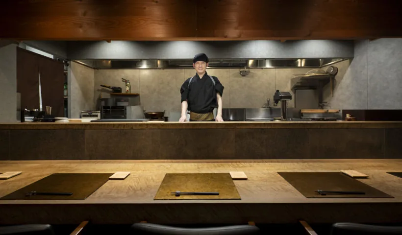
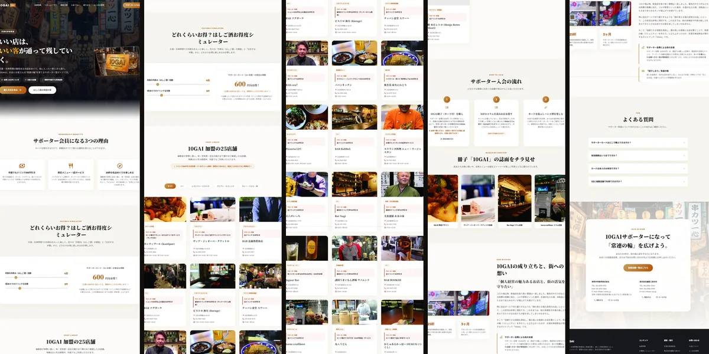
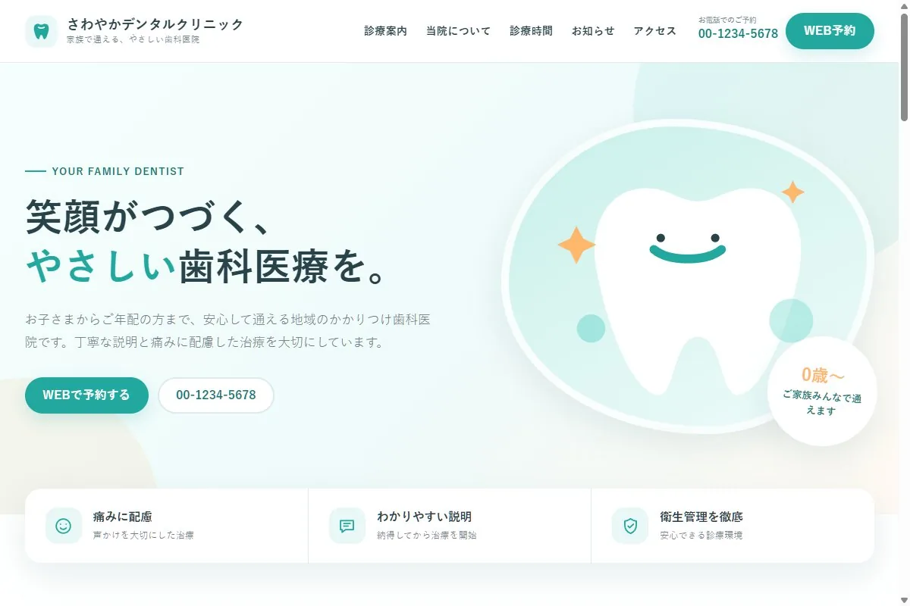
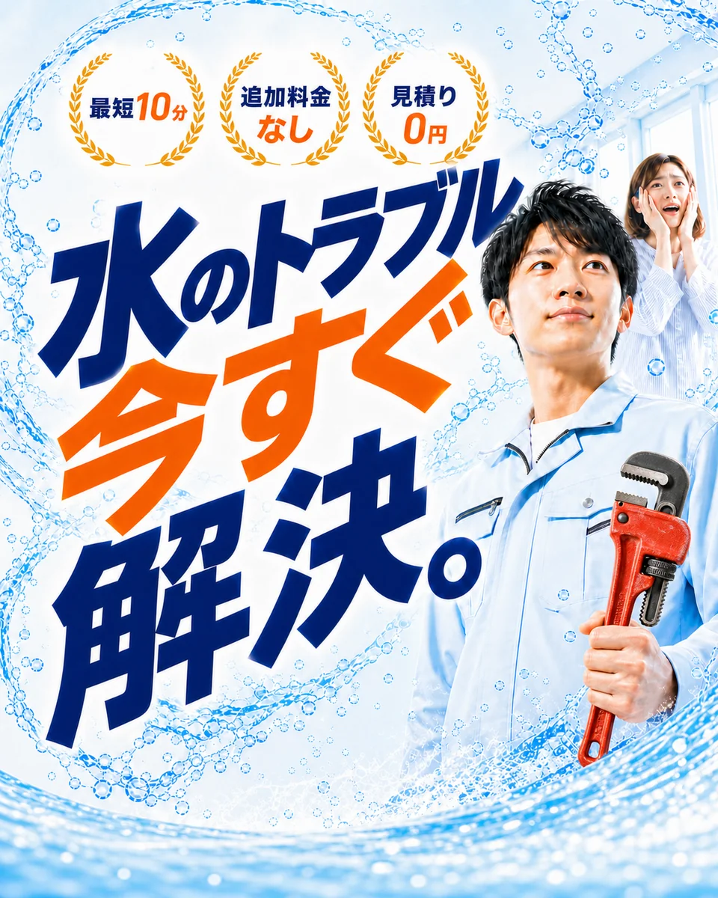

伝わるデザインと、
AIが生む圧倒的な機動力。
WEBデザイナー歴17年の確かな造形力と、最新AIエンジニアリングを融合。
町のお寺や個人店の魅力を引き出すWeb制作から、写真撮影、記事制作、業務ミニアプリ開発までワンストップに伴走します。
プロフィール

中村 浩樹
Freelance Engineer / Web Designer
location_on 大阪府在住 / リモート対応可
WEBデザイナーとして約17年の経験を有し、サイト制作から運営・編集、ECサイトの立ち上げ、さらにはグルメ記事の編集や簡易アプリの開発など幅広く対応してきました。
小規模な組織で、WEBに関する業務を横断的に担当することが多く、新規業務や仕組みが未整備な状況でも、自ら考えて立ち上げていく業務を多数経験し、環境づくりから運用まで関わってきました。方針が急に決まる状況下でも、ゼロから形にする業務を多く経験しています。
AIツールにも関心が高く、CodexやAntigravity等を活用したコード生成・検証も日常的に行っています。現在はシロナデザインという名前でカメラマンと二人で大阪を中心に、町のお寺や個人店に特化したホームページ制作、写真撮影、Googleビジネスプロフィール運営代行、各種デザインなどを行っています。
アイデアを形にする
「こんなものがあったら」を実際に動くプロダクトへ。技術とデザインの両輪で動かします。
小さく速く届ける
大きな仕様書より、動くプロトタイプ。フィードバックを重ねながら育てるスタイルです。
使う人目線で作る
機能の多さより使いやすさ。エンドユーザーの体験を常に中心に設計します。
一緒に育てる
作って終わりではなく、更新や改善を重ねながら、長く使いやすい形へ育てていきます。
こんなお悩みはありませんか？
よくある課題をタップすると、シロナデザインによる解決策と制作後の姿が確認できます。
何から始めればいいか分からない
仕様書が書けず、専門用語ばかりで誰に相談すればいいかも分からず、半年以上プロジェクトが止まったまま...
最短即日の動くプロトタイプで、画面を見ながら直感決定
「ざっくりとした想い」の段階から大歓迎です。目的や現状の課題を対話で整理し、AIも活用して最短即日でブラウザで動くプロトタイプを作成。実際の画面を触りながら直感的に決定できます。
スマホで見づらく崩れている・古い
10年以上前の古いホームページで文字が極端に小さく、訪問者がすぐ離脱してしまい問い合わせに繋がらない...
スマホ完全最適化 ＆ 迷わせない親指ファースト導線
閲覧者の8割以上を占めるスマートフォン操作に完全特化。親指ひとつで問い合わせや予約、アクセス情報へ辿り着ける快適な情報設計で離脱を防ぎます。
写真が暗く、フリー素材ばかりで想いが伝わらない
スマホで適当に撮った暗い写真や、どこかで見たフリー素材ばかりで、本来のお寺やお店の温かみが伝わらない...
プロカメラマン撮り下ろし写真 ＆ 伝わる上質な世界観
フリー素材に頼らず、プロカメラマンと連携してお寺や店舗の空気感、スタッフの温かみを引き出す写真撮影を実施。本物の魅力をビジュアルで直感的に届けます。
公開後に放置され、更新や運用ができない
制作会社と連絡が取れなくなったり、操作方法が複雑すぎてお知らせが何年も前の日付で放置されている...
更新代行 ＆ 日常運用丸ごとサポートでずっと安心
納品後も丸投げOK。WordPressの簡単更新設計に加え、ドメイン・サーバー管理やちょっとした文章修正、Googleビジネスプロフィールの集客改善までトータルで安心サポートします。
提供サービス
Webデザイン
目的やターゲットに合わせた伝わるデザイン設計。想いに寄り添い、成果につながるサイトを丁寧に制作します。
コーディング
再現性だけでなく、更新性や堅牢性を重視したコーディング。表示速度やレスポンシブにも配慮します。
WordPress / Shopify
CMSやECサイト構築に対応。日々の更新しやすさを考慮したカスタマイズと運用環境を整えます。
LP制作
魅力が伝わるLPを導線設計から丁寧に制作。コンバージョンとブランド質感の両立を目指します。
記事制作・編集
Webサイトやサービス内容に合わせて記事作成・編集を実施。AIも活用しながら迅速に制作を進めます。
写真撮影
サイト全体のトーンに合わせて撮影。空間や人の空気感が伝わるよう、統一感を意識して撮影します。
ミニアプリ開発
日々の業務の不便を解消する小さな業務ツールやWebアプリを制作。現場にフィットした形を提供します。
AI駆動開発
要件定義からコーディング、テストまでAIと協調。開発スピードと設計品質を高い次元で両立します。
AI駆動開発 ＆ 協調プロセス
要件整理・設計からコーディングまでAIと協調。爆速の可視化と高精度な品質保証を実現します。
制作実績・作例
クリックすると詳細（課題・提案・成果）をご確認いただけます。
アーリーホーム株式会社
不動産・美容・フードなど多角的な事業展開を分かりやすく整理し、信頼感を伝えるデザインへ刷新。

ごちそうさん グルメメディア
関西の名店紹介とお取り寄せ情報を届けるメディア。記事制作・編集にも携わりました。

元立寺 寺院公式Webサイト
敷居の高さを感じさせず、歴史と地域への想いが伝わる温かみのあるデザインに刷新。

サブカルDJパーティカレンダー
「今日どこで何があるか」がひと目で分かる、関西のイベント情報に特化したWebアプリ。

10GAI 公式サイト
飲食やエンタメなど多ジャンルが集う街の魅力を発信するプラットフォームサイト。

大阪ガス 座席表アプリ
70インチタッチディスプレイで直感的に座席状況を共有・更新できる社内Webアプリ。

さわやかデンタルクリニック（作例）
地域住民に信頼感とやさしさを伝えるデザイン。ブロックエディタのカスタマイズによる更新性を検証。

まち水道レスキュー（作例）
緊急時でも料金・対応スピード・相談導線を迷わず確認できる情報設計を検証したLP。

ルミエールエクラ（作例）
清潔感と落ち着きのあるトーンで施術の魅力と安心感を伝えるサロンサイト。
制作の流れ
「何から始めればいいか分からない」段階から、伴走しながら形にしていきます。
「思っていたのと違う」をゼロにする4ステップ
分厚い仕様書を待つのではなく、実際に動く画面（プロトタイプ）で手触りを確認しながら進めるため、手戻りなく最速で理想のサイトへと導きます。
ヒアリング・現状整理
「サイトを作りたいけれど、何から決めればいいか分からない」という段階から大歓迎です。目的や現状の課題、ご予算・納期を丁寧に整理し、必要な要素を明確にします。
企画構成・プロトタイプ
サイト構成や導線設計をご提案。AIツールも活用し、初期段階で実際にブラウザで動くプロトタイプを作成して共有・確認します。
デザイン・AI協調開発
洗練されたデザインの肉付けと、スマホ・PCに完全対応したコーディングを実施。プロトタイプで確認を重ねながら迅速に実装を進めます。
公開・運用サポート
ドメイン・サーバー設定や本番公開テストを経て納品。公開後も更新方法の丁寧なレクチャーや、ちょっとした修正・日々の運用相談までしっかり伴走します。
お問い合わせ
「まず何から始めればいい？」という段階からでも大丈夫です。
Webまわりのことを、お気軽にご相談ください。